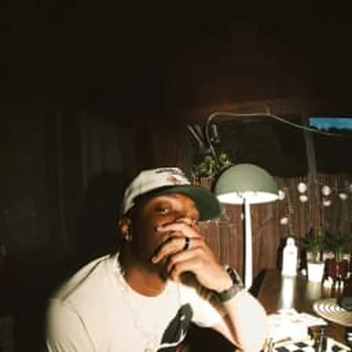

Aspect Juni es una de las promesas más sólidas de la nueva ola en la música urbana española. Con un sonido propio que fusiona Afrobeat, R&B y Dancehall con letras crudas e íntimas, transforma experiencias personales en canciones que enganchan desde el primer segundo. En su trayectoria ya destacan colaboraciones y trabajos con nombres clave de la escena como Maikel Delacalle, Chus Santana, Niickzy, Yapi o B10, además de haber captado la atención de gigantes de la industria como Zion & Lennox y Bizarrap. Aspect Juni sigue escalando posiciones en festivales y salas emblemáticas, demostrando que su proyecto no es una etapa, sino la construcción de un legado en constante crecimiento.